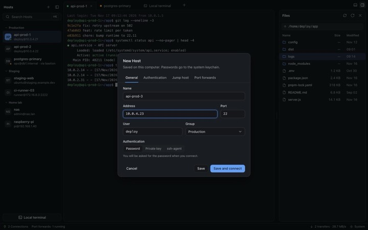

Open-source desktop apps by Ame
A Markdown editor, a dictionary reader, an SSH client and a download manager. Three are out for macOS, Windows and Linux; NimGet is at version 1.3.0.
## Release 0.2
Ship the outline panel and Mermaid export.
MINT, a Markdown editor with live preview
Markdown renders as you type, and the syntax under the cursor comes back for editing. MINT edits plain .md files in place and saves untouched parts byte for byte.
See MINT on GitHub- notes
- roadmap.mdnow
- install.md2 h
- shortcuts.mdNov 16
- themes.mdNov 16
- reading
- tauri-notes.mdNov 14
- katex-cheatsheet.mdNov 12
- mermaid.mdNov 10
- assets
- outline-panel.pngNov 9
- focus-mode.pngNov 9
Roadmap
.md file; open it in any editor.## Release 0.2
- Typewriter and focus modes
- Export to HTML and PDF
- Outline panel with drag to reorder
- Custom CSS themes from a folder
| Platform | Installer | Updates itself |
|---|---|---|
| macOS | .dmg | Yes |
| Windows | .exe | Yes |
| Linux | .AppImage, .deb, .rpm | AppImage only |
OpenDict, a reader for your MDict dictionaries
Type a word once and every dictionary in the group answers on one page, each entry in its own layout.
A global shortcut opens a small window over the PDF or e-book you are reading. No account, no server.
- Opens .mdx and .mdd files you own
- Windows, macOS and Linux
- GPL-3.0, version 0.1.0
- adj.lasting for only a short time
- Fame in the world of pop is ephemeral.
ephemeral pleasures 短暂的欢乐
ssh-astra, a desktop SSH and SFTP client
-
Keeps hosts, terminals and files in one window
Saved hosts sit in groups on the left. Each connection carries its terminal tabs and an SFTP file panel beside them.
-
Saves hosts with 3 kinds of port forward
Local, remote and SOCKS forwards sit on the host with its key and jump host. Passwords go to the system keychain.

-
Checks ED25519 host keys before connecting
A new host shows its fingerprint before you trust it. Known hosts are shared with OpenSSH.
Built with Tauri and a Rust SSH core. No release yet.
See ssh-astra on GitHubNimGet, a download manager written in Go
Up to 32 connections a file, rebalanced as they finish, and resume at the byte even after a crash. Version 1.3.0 for macOS and Windows.
See NimGet on GitHubQueues downloads by priority
Host caps, speed limits and a schedule.
Saves HLS streams as MP4
An .m3u8 with AES-128 to one file, remuxed by ffmpeg.
Takes downloads from Chrome and Edge
The extension hands links and sessions to the app.
Runs as a CLI on Linux
The same queue as a service, with an HTTP API.
Other repositories
- deepseekcodeGo · 86 starsA coding agent for DeepSeek models, now archived.
- weftroRustA local file workbench and tool runtime.
- hayakvGoA key-value server that speaks the Redis protocol.
- make-mad-skillPythonAn agent skill that plans and cuts AMV edits.
- pdoom-video-win95JavaScriptA Windows 95 style music video rendered from code.